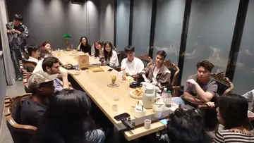
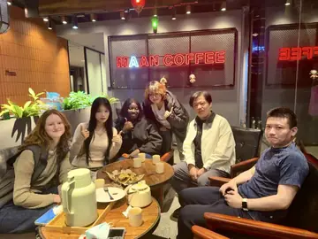
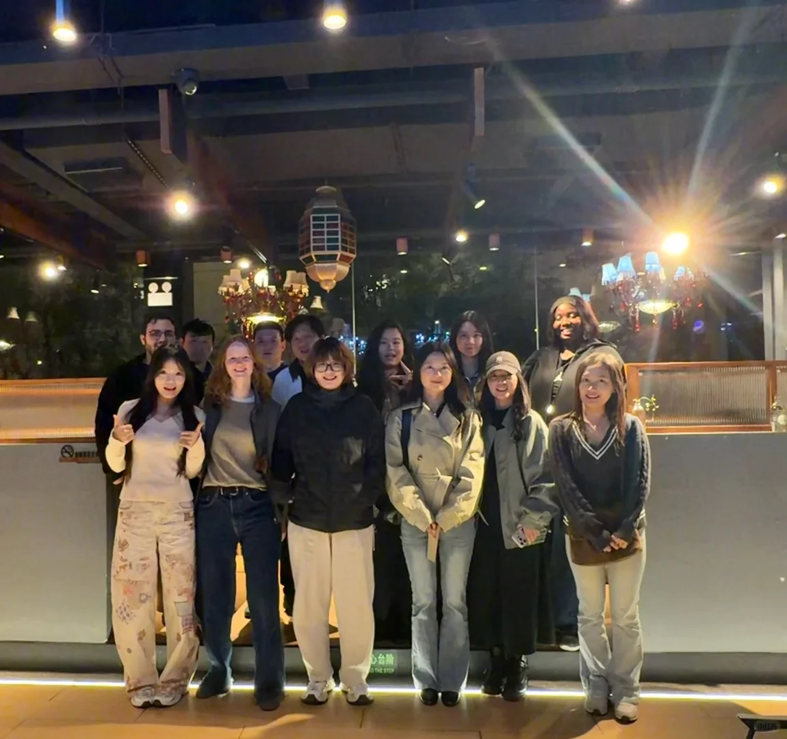
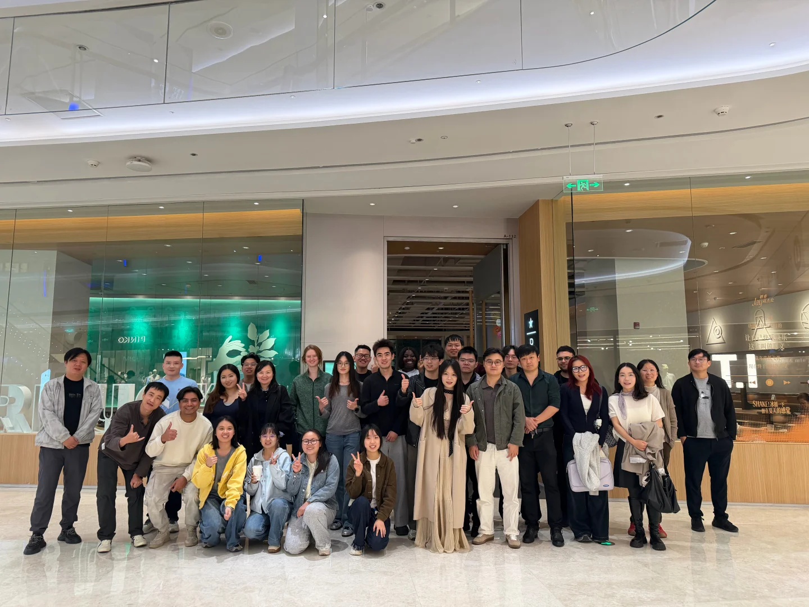
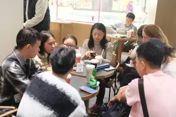
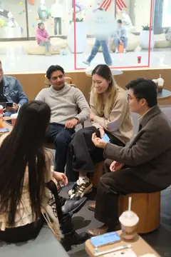
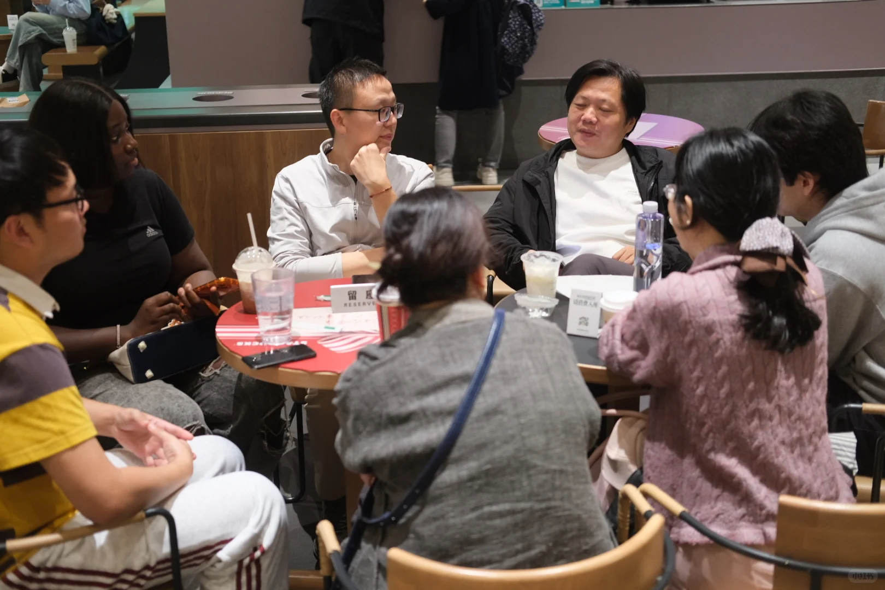
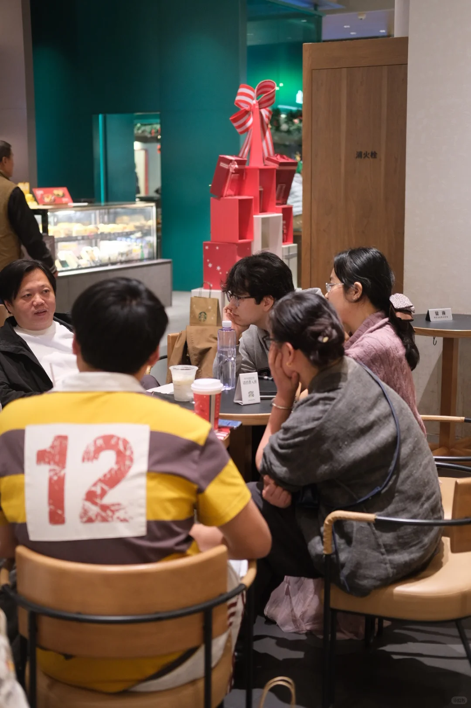
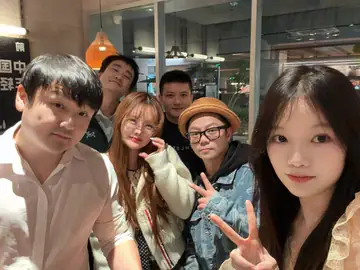

Six people around a table
At the third meetup, four groups of six broke the ice, explored a shared topic, then had time to follow their own conversations.
Meet people in Wuhan and practise English around a table. We start with introductions, then break into small groups to talk. If it’s your first time, tell us about a film you’ve seen or a favourite spot in the city.
Join a meetup ↓ Browse photos
At the third meetup, four groups of six broke the ice, explored a shared topic, then had time to follow their own conversations.
The fourth meetup moved to a new venue. What stayed with Ygritte was how closely people listened and how much room they gave each other to speak.
Choose a meetup to view its photos.
















Scan either code to ask Ygritte, the organizer, about the next meetup. On your phone, tap a code to open it, save the image, then scan it from your album in the matching app.
Open Liora’s Xiaohongshu profile ↗ WeChat · Ygritte ↗
WeChat · Ygritte ↗